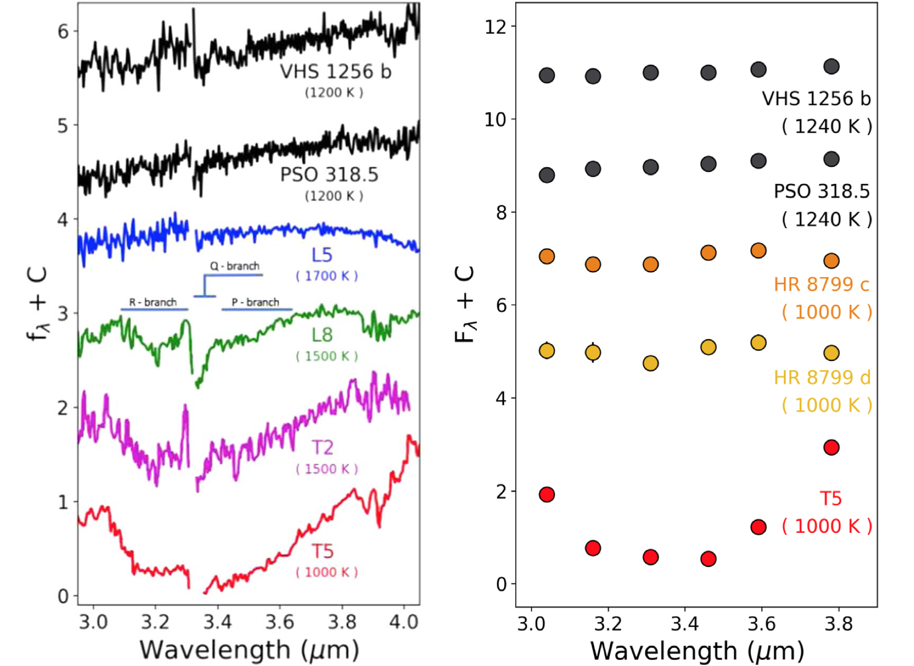

Studying isolated and wide-separation brown dwarfs is extremely useful for predicting and interpreting the atmospheric properties we may see with future observations of directly imaged exoplanets. Observations of brown dwarfs can also help set the basic requirements for future exoplanet-focused instruments.
PSO 318.5 and VHS 1256 b are brown dwarfs that share the same color-space as the HR 8799 planets. Both objects are cold enough to have methane in their atmospheres, yet their ground-based near-infrared spectra showed no evidence of it. I used Keck/NIRSPEC to take medium resolution L band spectra of PSO 318.5 and VHS 1256 b and detected very shallow methane features compared to normal brown dwarfs. Their atmospheres are out of chemical equilibrium and the synthetic L band photometry implies that HR 8799 c and d have methane in their atmospheres.
You can read the paper and get spectra here.
